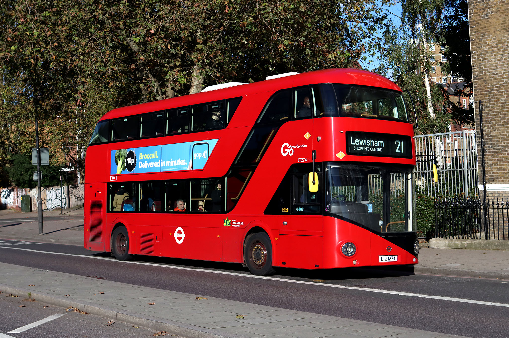

You can help stop carbon emissions and pollution by transport. Instead of using a car you could just as easily use a bus or a bike. Private transportation is useful sometimes, it’s quieter, more convenient, and it’s quicker. But it has a massive downside of pollution and waste. Instead of a short drive it could be a bike ride or a walk. Both of which can help you exercise in the process. Using various public transportation options for longer distances are also important. It helps share the carbon emissions and sometimes it’s easier than private transportation. Public can allow you to skip traffic (bus lanes or trains). With rising gas prices it's much cheaper to just use public transport for some occasions. If you're an adult try to cut down your driving and if you're a kid convince your parents to maybe sometimes walk to destinations. Doing just this can cut down your carbon footprint and promote respect for the earth (kaitiakitanga) and a more eco-friendly environment!
